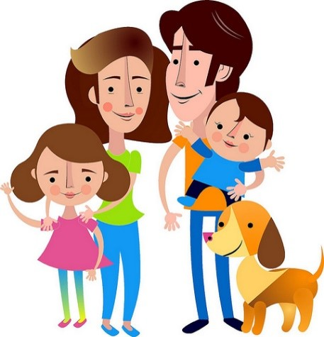

Las reacciones de la familia ante la presencia de una enfermedad dependen de varios factores: tipo de familia, cultura y educación de cada miembro; lo que influye en el enfermo.
Las actitudes de la familia acerca del dolor, invalidez, regímenes terapéuticos, o de una enfermedad como la diabetes, pueden establecer la reacción del paciente a sus síntomas o complicaciones.

Un grupo de apoyo puede ayudar a enfrentar las barreras que impiden controlar la diabetes así como a encontrar maneras saludables de manejar las emociones que surgen de vivir con esta enfermedad.